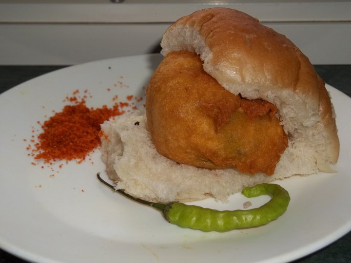

Vada Pav:
Vada Pav, alternatively spelt Vada Pao, Wada Pav, or Wada Pao, is a vegetarian fast food dish native to the Indian state of Maharashtra. The dish
consists of a deep fried potato dumpling placed inside a bread bun (pav) sliced almost in half through the middle. It is generally accompanied with one or more chutneys and a green
chilli pepper.